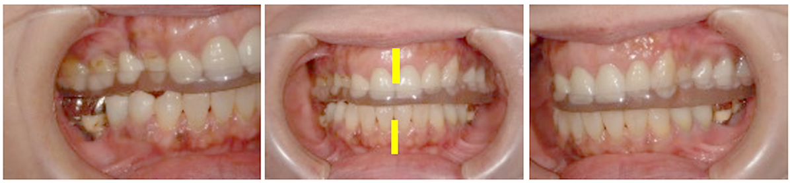

技工物による奥歯の治療・噛み合わせの治療について
ユミデンタルオフィスでは、院内に歯科技工士が常駐してインレー（詰め物）やクラウン（被せ物）などの製作をしています。奥歯は非常に強い力がかかる部分であり、見た目の自然さと丈夫さを両立させる必要がある箇所です。当院では保険治療においても精度の高い型取りとレントゲンで適合の確認を行ってからセットします。 セラミック修復においては最新のCAD/CAMシステムによる口腔内スキャナーを用いて型取り不要の スキャンニングで作製しますので、 非常にクオリティの高いものができあがります。
奥歯にはどんな役割がある？
奥歯は前歯のように目立つ部分ではありませんが、生きていくために不可欠な重要な役割を持っています。主な役割として挙げられるのが、食べた物を消化・吸収しやすいようにしっかりとすりつぶし、唾液と混ぜるという働きです。
さらに、食事以外の部分でも重要な役割を持っていることがわかってきました。目立たないからと言って、適当に処置してはいけないのが奥歯なのです。
奥歯の機能性
奥歯の役割や食べ物を咬んですりつぶすことだけではありません。正しい発音や瞬発力など、生活に必要な能力と密接な関係性を持っています。実は、人が瞬発的な力を発揮するときには無意識に奥歯をしっかりと咬みしめており、奥歯が欠けると十分な力が出せなくなってしまうのです。
また、奥歯がないとハ行やラ行の発音がしにくくなり、会話の際に活舌が悪くなってしまいます。
奥歯による審美性
奥歯は周りから見て目立つ歯ではないため、審美性には影響がないと思われがちです。しかし、奥歯を失ったまま放置すると、周りの歯が失った奥歯の機能を補おうと移動してきて、歯並びが乱れてしまいます。
さらに、歯が抜けた部分を補うために食事なども決まった方向でしか咬まなくなるため、顔周りの筋肉バランスも崩れて、しわなどができる原因になってしまいます。
奥歯が関わる記憶力
奥歯は、記憶力と密接に関係していることがわかっています。奥歯のあるマウスと奥歯のないマウスで比較実験を行った例では、奥歯のないマウスは記憶力が大幅に低下したうえに脳細胞にも問題が発生したという結果が出ています。奥歯をしっかり咬むことができず、脳への血流が減少したことが原因ではないかと考えられています。
咬み合わせの診断・治療
虫歯や歯周病の治療、前歯をキレイにしたい、しっかり噛めるようにしたい治療を行う場合、全顎的に 咬み合わせのバランスが失われていると、機能的に問題を生じ、理想的な形態を作ることが難しいだけでなく、 長期的に安定することはできません。
また奥歯の歯が無く、片咬みになっていたり、歯軋り・食いしばり、これまでの治療による咬み合わせの ズレなどが原因で顎関節症を生じている場合もあります。
審美的・機能的なお口の状態を整えるために、まずは現在の咬み合わせの状態を審査・診断し、 どこを改善する必要があるかを視覚的に判断するため、検査や治療を行っていきます。
ユミデンタルオフィスの奥歯治療
奥歯は咬むだけでなく、さまざまな身体機能に大きな影響を与える重要な役割を持っていることがわかっています。当院では、単に機能面の回復だけを目的とはせず、本物の歯と同様の見た目や使用感、患者様自身の満足まで意識した治療を行っています。
奥歯は周りからは見えにくい歯ですが、それでも見た目と機能の両面から患者様にご納得いただける技工物を製作します。
顎関節の診断
顎関節の診断
スプリント診断

PICK UP！ 当院では技工士が常駐しています！
当院には院内技工士が常駐しており、患者様に合わせた入れ歯や詰め物・被せ物などを作製しています。同じ院内に常駐することで歯科医師と技工士の連携が取りやすく、より精度の高い技工物をスピーディーにご提供することができるのです。
- メリット1.対応が早い
- メリット2.より精度の高い技工物を作製できる
- メリット3.技工士が直接患者様のお口を確認できる
症例
01
| 年齢 | |
|---|---|
| 性別 | |
| 住所 | |
| 主訴/ニーズ | |
| 治療期間 | |
| 治療内容 | |
| 費用 | |
| 院長コメント & 治療のリスク |